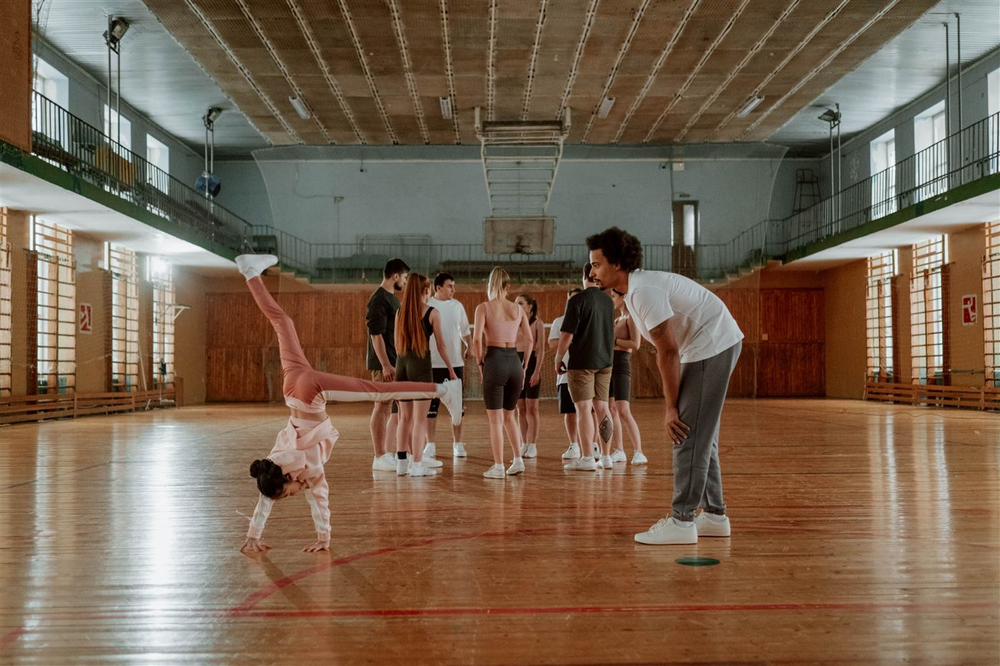

Straks deel je vanaf één euro geld met een Initiatief in je eigen buurt. Lokale ondernemers dragen de kosten, dus er gaat niets af.
Het platform is nog in opbouw. Op deze pagina lees je wat Mondéall wordt.
Lees wat Mondéall wordtVoorbeelden · gemeente Lochem
Elk Initiatief begint bij iemand die de eerste stap zet: een bestuurslid, een leerkracht, een vrijwilliger. Straks kies je er een uit en deel je mee vanaf één euro. Alles komt aan, omdat Sponsors de kosten dragen.
Fictieve voorbeelden: het platform wordt gebouwd. Klik op een kaart voor de Initiatiefpagina.Straks gesorteerd op nabijheid, niet op populariteit. Geen ranglijst, geen doelbedrag.
In vier korte stappen. Zo ziet het eruit als het platform er is.
Preview: het platform wordt gebouwd. Er wordt hier niets opgeslagen of verstuurd.Zo laten we je Initiatief zien bij de juiste gemeente en Kern.
PlaatsKies er één. Klik op een sector voor een korte toelichting.
Dit is altijd een vereniging, stichting, school of kerk, nooit een privépersoon of privérekening. Het geld dat mensen delen komt straks rechtstreeks bij deze organisatie terecht.
Naam van de organisatieZo kun je straks terugkomen in je werkplaats, verder werken aan je Initiatief en later de terugkoppeling geven.
Voornaam en achternaamHierna vragen we je om een code uit deze mail over te typen. Dat kost je een halve minuut.
We stuurden een code naar jij@voorbeeld.nl. Nog één ding: we willen zeker weten dat dit jouw e-mailadres is.
Deze code is 10 minuten geldig.
Geld komt niet altijd waar het nodig is. Systemen zijn te complex geworden, te commercieel, of te onpersoonlijk. Mondéall maakt delen weer eenvoudig en menselijk.
"Mondéall maakt het voor iedereen mogelijk om altijd met een goed gevoel volwaardig geld te delen, zodat we samen vol vertrouwen en in vrijheid bijdragen aan een kleurrijke wereld en een bloeiende toekomst."
Mondéall is altijd een aanvulling op bestaande overheidsstructuren en subsidies, onder meer BOSA — nooit een vervanging.
Elk Initiatief valt binnen één van de twaalf sectoren. Klik op een sector voor de aandachtsgebieden.
Voor wie meer wil weten. Elke entiteit heeft één functie; de BV komt nooit in de giftstroom.
Mondéall is een aanvulling op bestaande subsidies en regelingen, geen vervanging. Wil je samenwerken? Neem contact op via de contactsectie hieronder.
Neem contact opMondéall komt voort uit de overtuiging dat delen weer persoonlijk en vertrouwd moet aanvoelen — niet complex, niet commercieel, niet anoniem. Het idee groeide vanuit de dagelijkse praktijk met verenigingen en gemeenschappen, en de vraag: hoe zorgen we dat wat we delen ook echt aankomt, met een goed gevoel voor iedereen die meedoet.

Sfeerbeeld ter illustratie — eigen fotografie van Mondéall-Initiatieven volgt.
Foto: Pulnb / PexelsMondéall is in opbouw. Dit verhaal beschrijft waar het vandaan komt, niet dat het platform al draait.
Laat je e-mailadres achter en we houden je op de hoogte zodra er meer te delen valt.
Of mail direct: info@mondeall.eu